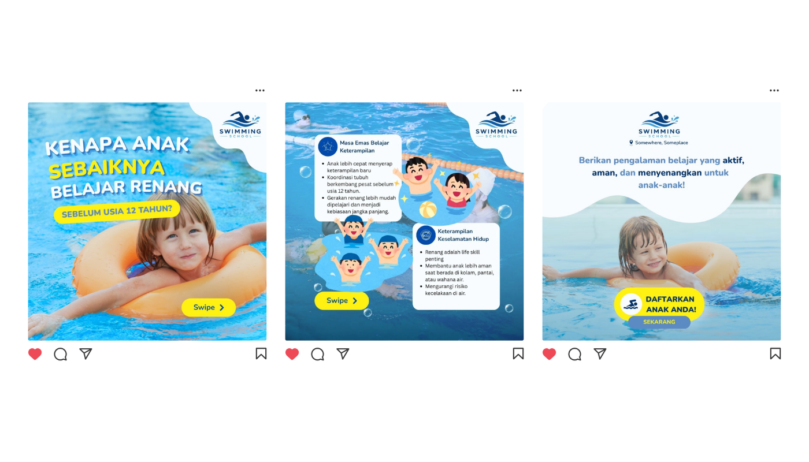
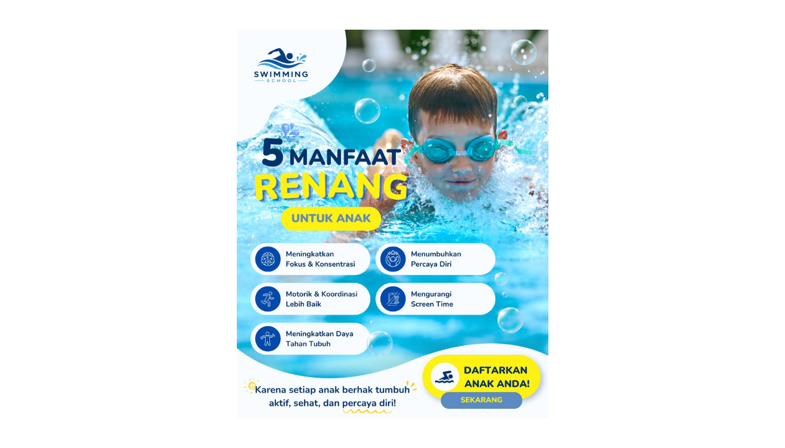

Swimming School Educational Campaign

Project Overview
This project explores an educational Instagram campaign for a children's swimming school. The campaign aims to raise awareness among parents about the importance of introducing swimming at an early age while simultaneously promoting the swimming program.
Instead of directly advertising classes, the campaign focuses on educational storytelling by presenting the benefits of swimming, life skills gained through swimming lessons, and child safety around water.
The visual direction combines cheerful illustrations, friendly typography, and aquatic elements to create a trustworthy and child-friendly learning environment.
Design Goal
Educating Before Promoting
The challenge was to create promotional content that first educates parents about the benefits of swimming and then naturally encourages enrollment.
The campaign needed to communicate important information clearly while maintaining a playful and welcoming visual identity that appeals to both parents and children.
Creative Process
The design process focused on transforming educational information into engaging and easy-to-understand social media content.
Content Research
Explored articles and references regarding the benefits of swimming lessons for children and identified key information relevant to parents.
- Research on early childhood development.
- Benefits of learning to swim at an early age.
- Water safety awareness.
- Educational campaign references.
Content Planning
Planned the carousel structure to guide audiences from awareness, education, and finally to the registration call-to-action.
- Problem awareness content.
- Educational information.
- Benefit explanation.
- Registration call-to-action.
Visual Direction
Developed a friendly visual language inspired by water, children's activities, and educational materials to create a safe and fun atmosphere.
Information Design
Organized information using illustrations, icons, and simplified copywriting to make educational content easy to digest for parents.

Final Campaign
Refined the carousel design to maintain visual consistency while guiding users naturally toward the registration action.
Key Design Focus
- Developed educational social media content.
- Created a storytelling-based carousel structure.
- Applied child-friendly visual design principles.
- Maintained clear information hierarchy and readability.
- Balanced educational value and promotional objectives.
- Designed an engaging registration call-to-action.